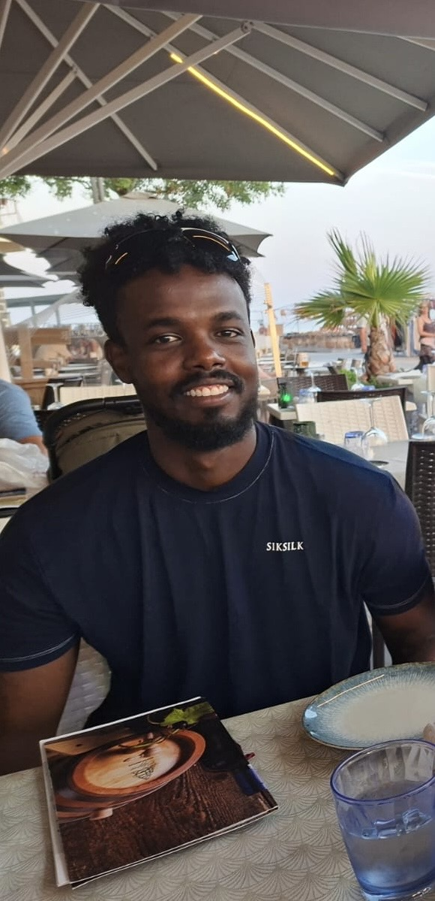

04/2025 – heute
Produktion und Probenvorbereitung
Stooss AG · Hedingen
Zuschneiden und Vorbereiten von Metallproben für anschliessende Materialprüfungen.
Mein beruflicher Weg, meine technischen Interessen und das, was ich gerade lerne.
Practical experience, technical interests and what I’m learning next.
Portfolio ansehen / View portfolio

Ich bin Abdi Abdirashid. Unterhaltspraktiker EBA mit Erfahrung in Produktion, Zimmerei, Montage und Kundenservice. Ich packe gerne mit an und lerne neue technische und digitale Fähigkeiten dazu.
Niederlassungsbewilligung CEine praktische Grundlage, Interesse an technischen Zusammenhängen und die Bereitschaft, mich in neue Aufgaben einzuarbeiten. Offen für Produktion, Logistik und Lager, technische Tätigkeiten sowie Büro- und Administrationsunterstützung.
Zuschneiden und Vorbereiten von Metallproben für anschliessende Materialprüfungen.
Unterstützung der Fachkräfte bei Zimmerei- und Vorfertigungsarbeiten nach Vorgaben.
Gästebetreuung, administrative Unterstützung und Arbeit mit digitalen Warenwirtschaftssystemen.
Montage und Verdrahtung für Mikrowellen, Backöfen und Waschmaschinen sowie Qualitäts- und Funktionsprüfungen anhand von Schaltplänen.
Ich interessiere mich für Datenanalyse und dafür, wie Technik im Alltag funktioniert.
Mein Lernschwerpunkt: Excel, Power Query und SQL. Ich baue meine Kenntnisse berufsbegleitend auf.
Google IT Support Professional Certificate auf Coursera – berufsbegleitend in Bearbeitung.
PC-Zusammenbau und Fehlerbehebung, Windows 10/11, Linux- und Netzwerk-Grundlagen sowie Dokumentation mit Jira.
Eigene Projekte geben mir Raum, auszuprobieren und praktische Erfahrung zu sammeln.
Ich fliege Drohnen und baue in meiner Freizeit FPV-Drohnen. Drohnenqualifikationen: A1/A3 + A2.
Private Flugpraxis · keine kommerziellen Kundenprojekte
In meiner Freizeit verbinde ich Technik mit Kreativität und Natur. Auf meiner Hobbyseite zeige ich Drohnenaufnahmen und persönliche Projekte und gebe Einblicke in meine weiteren Interessen.
Hobbys und Projekte entdecken →Sie suchen Unterstützung für Ihr Team? Ich freue mich über ein Gespräch zu einer passenden Aufgabe oder einem Einstieg in ein neues Tätigkeitsfeld.
1 Monat Kündigungsfrist · Führerausweis Kategorie B
I’m Abdi Abdirashid. A maintenance practitioner with a Swiss Federal Vocational Certificate (EBA) and experience in production, carpentry, assembly and customer service. I enjoy hands-on work and learning new technical and digital skills.
Swiss permanent residence permit CA practical foundation, an interest in how technical systems work and a willingness to learn new tasks. Open to production, logistics, warehousing, technical operations and office or administrative support.
Cutting and preparing metal samples for subsequent materials testing.
Supporting skilled carpenters with carpentry and prefabrication work according to instructions.
Serving guests, supporting administrative tasks and working with digital inventory management systems.
Assembly and wiring for microwaves, ovens and washing machines, plus quality and functional checks using circuit diagrams.
I’m interested in data analysis and how technology works in everyday life.
My learning focus: Excel, Power Query and SQL. I am developing these skills alongside employment.
Google IT Support Professional Certificate on Coursera – in progress alongside employment.
PC assembly and troubleshooting, Windows 10/11, Linux and networking fundamentals, and documentation with Jira.
Personal projects give me space to experiment and build practical experience.
I fly drones and build FPV drones in my spare time. Drone qualifications: A1/A3 + A2.
Personal flight practice · not commercial client projects
I want to use Excel, Power Query and SQL to understand data and present it clearly. I will add concrete learning projects here when they are ready to share.
GitHub projects ↗Looking for someone to support your team? I’d welcome a conversation about a suitable role or an opportunity to move into a new field.
1 month’s notice · Category B driving licence